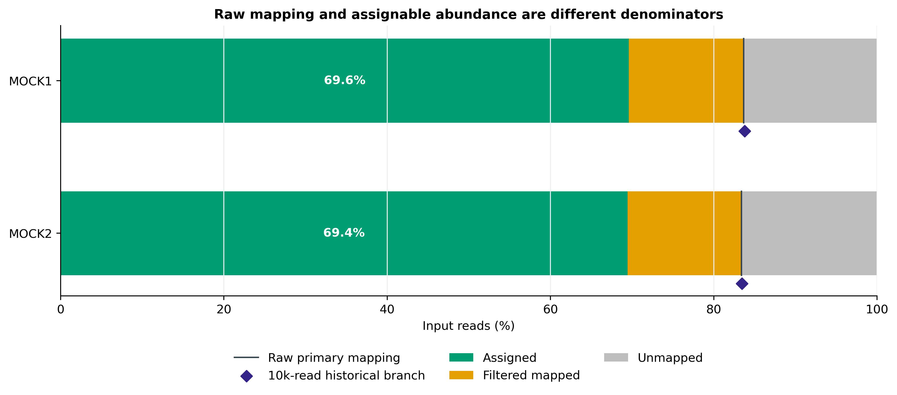
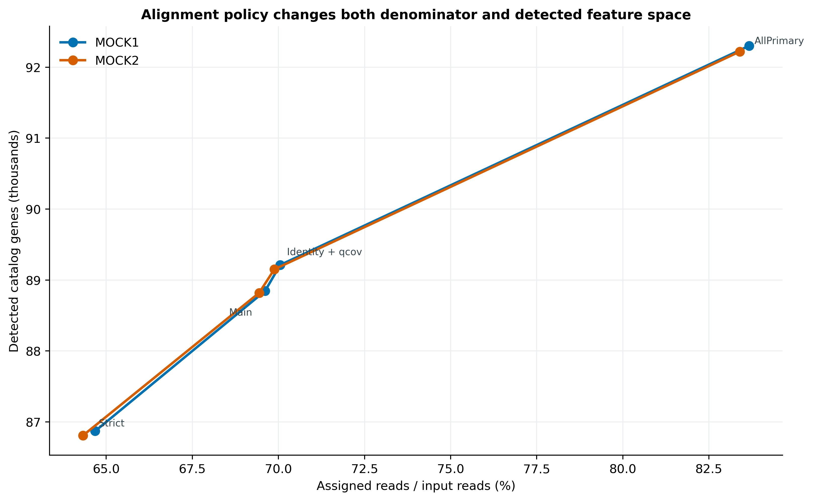
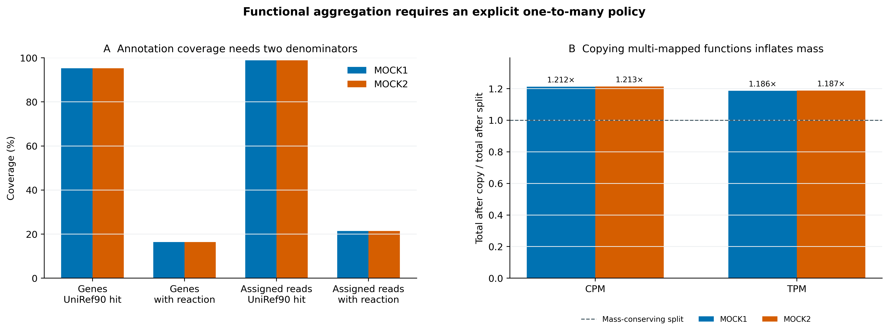
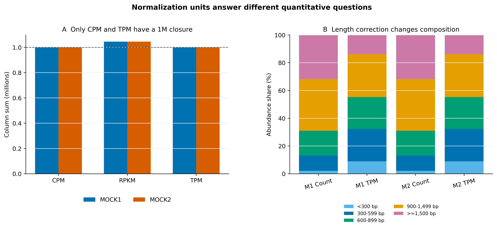

options(timeout = 600)
base_url <- "https://raw.githubusercontent.com/petemeng/metagenomics-best-practices/e219a2cd01609cc208a89e291cbd363ed7f2fbd8/"
files <- read.delim(paste0(base_url, "examples/35/files.tsv"))
for (i in seq_len(nrow(files))) {
path <- files$path[i]
dir.create(dirname(path), recursive = TRUE, showWarnings = FALSE)
if (!file.exists(path)) {
download.file(paste0(base_url, files$source[i]), path, mode = "wb")
}
}基因丰度谱：reads 回比基因目录与功能汇总
学习目标：把 clean reads 回比非冗余基因目录，建立能闭合的 read ledger；区分 raw mapping rate 与可进入丰度表的 assigned fraction；正确计算 raw count、CPM、RPKM、TPM；将 UniRef90 best hit 汇总到 MetaCyc reaction 时显式处理未注释基因和一对多映射。
真实数据：Meslier 等公开的PRJEB52977不均一微生物 DNA mocks：MOCK1（ERR9765746）和 MOCK2（ERR9765747）。每个官方 ENA run 确定性取得 2,000,000 个同步 pairs，经 fastp 1.3.6（Q20、低质量碱基不超过 40%、N 不超过 5、最短 50 bp）后保留 1,999,853 与 1,999,888 clean pairs (Meslier 等 2022年; Chen 等 2018年)。参考是同一 mocks 的六套真实 short-read assemblies 经 Prodigal 2.6.3 与 MMseqs2 9.d36de 以 95% identity/95% coverage 建立的 93,782-gene MEGAHIT mix catalog (Hyatt 等 2010年; Steinegger 和 Söding 2017年)；全部 FASTQ 与 catalog 文件身份均在input-lineage.tsv固定。
结论边界：两套 mock 用于技术校准，不是生物学重复；它们的 reads 参与过目录构建，因此高 mapping/detection 不能解释成独立预测性能，更不能外推为自然群落的生物效应。
提示先确定这一点
区分多重比对分配、基因长度校正与样本内归一化；功能一对多映射不能解释为新增 reads。
从 reads 到基因丰度，分母在哪里变化？
锚定论文是 Delgado 与 Andersson 对 biome-specific gene catalogues 的比较 (Delgado 和 Andersson 2022年)。论文先从 124 个 Baltic Sea 样本建立 individual、co-assembly 和 mix catalog，再用以下证据判断目录是否覆盖 reads 与基因空间：
- Fig. 3：每个样本随机抽 10,000 条未经标准化的 forward reads，用 Bowtie2
--local回比目录并统计 mapping percentage； - Fig. 5：从 coverage 与代表序列来源解释 mix catalog 为何同时吸收 individual 和 co-assembly 信息。
原文的 mapping 分支使用 seqtk 1.2（seed 100）、Bowtie2 2.3.4.3、SAMtools 1.9 和 HTSeq 0.11.2。本文先保留这条统计逻辑，再用锁定的新版本重跑；随后增加全量 clean R1+R2、第二候选比对、显式质量门槛和守恒账本。这样可以回答两个不同问题：
- 论文口径下，随机 10,000 条 forward reads 有多少被目录接住？
- 构建正式 abundance table 时，有多少 reads 通过了可解释、可审计的分配规则？

重要先给结论：mapping rate 不是丰度矩阵的分母
MOCK1/MOCK2 的 primary raw mapping rates 是 83.6705%/83.3977%，但通过 MAPQ >= 10、identity >= 95%、query coverage >= 80% 后，进入主计数表的只有 2,784,234/2,777,443 reads，即 69.6110%/69.4400% 的全部输入。报告一个“mapped percent”而不写过滤层，会把两个分母混成一个数字。
下载本例数据与分析代码
数据与代码清单列出了本例的输入表、分析脚本和环境文件（约 8.6 MiB）。本清单不含原始 FASTQ 或大型数据库；是否需要它们取决于下文的分析起点。清单中的已计算结果仅供核对；读取结果表不等于重新运行统计模型或上游工具。
在新建文件夹中运行下面的 R 代码，下载完成后即可按正文中的相对路径读取文件。需要核验文件版本时，可使用带完整性检查的下载脚本。
先锁定输入、版本和算力边界
算力门槛
| 项目 | 本次受控重算 | 真实 cohort 建议 |
|---|---|---|
| CPU | 16 核 | 16–64 核；样本级并行时限制总线程 |
| RAM | 实测峰值 7.43 GiB | Bowtie2 常见 8–32 GB；全库蛋白注释建议 32–64 GB |
| 磁盘 | 工作区约 350 MiB；UniRef90 .dmnd 36.3 GB |
至少 80 GB；若保留 SAM/BAM 按 FASTQ 的数倍规划 |
| 耗时 | Bowtie2 两样本 4 min 38 s；DIAMOND 1 h 42 min 15 s | 与 reads、目录和数据库近似线性增长，通常数小时到数天 |
没有服务器时，直接读取 data/small/35-gene-abundance-frozen/。其中保留完整 gene abundance long table、best-hit annotation、reaction table、mapping/normalization/function ledgers、命令、环境和资源记录；原始 FASTQ、索引、SAM/BAM 与 36.3 GB 数据库不进入 Git。只想练回比时可截取少量 reads，但子集的 detection rate 不能替代全量结果。
环境配置与完整运行说明
mamba create -n metagenome-gene-abundance-2026.07 \
--file env/gene-abundance-linux-64.lock
# 只有需要从 ENA 原始子集重建 clean FASTQ 时才需要
mamba create -n metagenome-read-qc-2026.07 \
--file env/read-qc-linux-64.lock
# 提供锁定的 HUMAnN 3.9 reaction mapping 与数据库 bootstrap 入口
mamba create -n metagenome-biobakery-2026.07 \
--file env/biobakery-linux-64.lock
GA_ENV_PREFIX="$HOME/miniconda3/envs/metagenome-gene-abundance-2026.07"
"${GA_ENV_PREFIX}/bin/bowtie2" --version
"${GA_ENV_PREFIX}/bin/samtools" --version
"${GA_ENV_PREFIX}/bin/htseq-count" --version
"${GA_ENV_PREFIX}/bin/seqtk" 2>&1 | head -n 2
"${GA_ENV_PREFIX}/bin/diamond" version# ENA full runs -> deterministic 2M-pair subsets -> paired fastp；可断点恢复
bash scripts/download_article35_gene_abundance_sources.sh \
. data/raw/article30 \
"$HOME/miniconda3/envs/metagenome-read-qc-2026.07"
# 约 36.3 GB 的 UniRef90 DIAMOND database 单独下载、解包并审计
bash scripts/bootstrap_article19_humann_databases.sh \
--project-root . --cache-root db/humann-cache download
bash scripts/bootstrap_article19_humann_databases.sh \
--project-root . --cache-root db/humann-cache extract-uniref90UniRef90 full database 固定为 HUMAnN v201901b，本机 .dmnd 必须恰为 36,332,007,356 bytes，SHA-256 为 67a00a99ead2a00c737b4b9cb7e64ecc9085c2539bbd21a2d0c92913936995a8。MetaCyc reaction mapping 的 SHA-256 固定为 8419ce78a62ca9130914f2c347a9708111cedc7de52ba274659ce51ec7de7752。数据库不写成 latest。
install.packages(c("ggplot2", "dplyr", "readr", "tidyr", "scales", "patchwork"))
library(ggplot2)
library(dplyr)
library(readr)
set.seed(20260735)
pal_pub <- c(
MOCK1 = "#0072B2", MOCK2 = "#D55E00",
Assigned = "#009E73", `Filtered mapped` = "#E69F00",
Unmapped = "#BDBDBD", Split = "#0072B2", Copy = "#CC79A7"
)
scale_color_pub <- function(...) scale_color_manual(values = pal_pub, ...)
scale_fill_pub <- function(...) scale_fill_manual(values = pal_pub, ...)
theme_pub <- function(base_size = 12) {
theme_bw(base_size = base_size) +
theme(
panel.grid.minor = element_blank(),
panel.grid.major.x = element_blank(),
axis.text = element_text(color = "black"),
strip.background = element_rect(fill = "#EEF3F5", color = NA),
legend.key = element_blank(),
plot.title.position = "plot"
)
}
save_pub <- function(plot, file_base, width = 180, height = 120,
units = "mm", dpi = 350) {
dir.create(dirname(file_base), recursive = TRUE, showWarnings = FALSE)
ggsave(paste0(file_base, ".pdf"), plot, width = width, height = height,
units = units, device = cairo_pdf)
ggsave(paste0(file_base, ".png"), plot, width = width, height = height,
units = units, dpi = dpi, bg = "white")
ggsave(paste0(file_base, ".tiff"), plot, width = width, height = height,
units = units, dpi = dpi, compression = "lzw", bg = "white")
invisible(plot)
}输入身份与计数约定
| Sample | ENA run | Clean pairs | Input reads | Catalog |
|---|---|---|---|---|
| MOCK1 | ERR9765746 | 1,999,853 | 3,999,706 | 93,782 genes |
| MOCK2 | ERR9765747 | 1,999,888 | 3,999,776 | 93,782 genes |
input-lineage.tsv 逐项记录四份 clean FASTQ、catalog FNA/FAA/metadata、UniRef90 database、reaction mapping 与论文 XML 的 byte count 和 SHA-256。准备器还核对 nucleotide/protein/metadata 的 93,782 个 ID 完全配对、核酸长度与 metadata 一致，再生成每条 sequence 单独作为 CDS 的 GFF。
准备 catalog、GFF 和输入检查
ROOT="$PWD"
WORK="data/raw/article35/work"
GA_ENV_PREFIX="$HOME/miniconda3/envs/metagenome-gene-abundance-2026.07"
UNIREF_DB="db/humann-cache/installed/humann-uniref90-v201901b/uniref90_201901b_full.dmnd"
REACTION_MAP="$HOME/miniconda3/envs/metagenome-biobakery-2026.07/lib/python3.12/site-packages/humann/data/pathways/metacyc_reactions_level4ec_only.uniref.bz2"
export PYTHONHASHSEED=0 PYTHONNOUSERSITE=1 PYTHONPATH=
mkdir -p "${WORK}/index" "${WORK}/legacy" "${WORK}/mapping" "${WORK}/annotation" "${WORK}/tmp/diamond"
"${GA_ENV_PREFIX}/bin/python" scripts/prepare_article35_gene_abundance_inputs.py \
--project-root "${ROOT}" \
--work-dir "${WORK}" \
--article30-raw-dir data/raw/article30 \
--uniref90-db "${UNIREF_DB}" \
--reaction-map "${REACTION_MAP}" \
--verify-large-db-sha256完整 SHA-256 会顺序读取 36.3 GB database，耗时明显但只需在首次准备或搬迁后做。日常复核使用冻结 manifest，不会反复读取原始数据库。
重要一次性真实重算入口
下面三条命令会依次完成论文兼容分支、全量 reads 回比、UniRef90 注释、丰度/功能汇总与 compact bundle 固化，并自动写出完成标记、命令账本、GNU time 资源记录和 checksum manifest。完成这组命令后，不必重复执行随后四小节展开的内部命令。
"${GA_ENV_PREFIX}/bin/python" scripts/run_article35_gene_abundance.py \
--project-root "${ROOT}" --env-prefix "${GA_ENV_PREFIX}" \
--work-dir "${WORK}" --threads 16
"${GA_ENV_PREFIX}/bin/python" scripts/summarize_article35_gene_abundance.py \
--project-root "${ROOT}" --work-dir "${WORK}" \
--reaction-map "${REACTION_MAP}"
"${GA_ENV_PREFIX}/bin/python" scripts/freeze_article35_gene_abundance.py \
--project-root "${ROOT}" --work-dir "${WORK}" \
--output-dir data/small/35-gene-abundance-frozen检查 1：10,000-read mapping 适合作为 catalog coverage 诊断，不适合作正式 abundance
论文在每个样本只抽 10,000 条 forward reads，是为公平、快速地比较多个 catalog；它不承诺精确估计低丰度 gene abundance。正式 profiling 应使用完整、经过同一 QC 的输入，并把抽样仅保留为 paper-compatible sensitivity branch。
先复现论文的 10,000-forward-read 口径
先定义计数单位：read、fragment 还是 alignment
本次主分支把 R1 与 R2 分别作为 reads 输入 -U：
\[ N_{input}=N_{R1}+N_{R2}. \]
因此一对双端 reads 最多贡献两个 read counts。若改用 Bowtie2 -1/-2 并按 read pair 或 fragment 计数，分母会约减半，overlap、discordant pair、singleton 和 multi-mapping 的规则也要重新定义。不能把 read counts 的结果口头改称 fragment counts。
SAM 中一条 read 还可能有 primary、secondary 或 supplementary alignments。本文只让 primary alignment 进入 gene count；secondary alignments 单独记账，不把“alignment 行数”当成 read 数 (Li 等 2009年)。
BT2="${WORK}/index/megahit-mix-primary"
REF="${WORK}/reference/megahit-mix-primary.fna"
GFF="${WORK}/reference/megahit-mix-primary.gff"
"${GA_ENV_PREFIX}/bin/bowtie2-build" --threads 16 "${REF}" "${BT2}"
for sample in MOCK1 MOCK2; do
"${GA_ENV_PREFIX}/bin/seqtk" sample -s100 \
"${WORK}/inputs/${sample}_R1.fastq.gz" 10000 \
> "${WORK}/legacy/${sample}.R1.seed100.n10000.fastq"
"${GA_ENV_PREFIX}/bin/bowtie2" --local --seed 100 -p 16 \
-x "${BT2}" \
-U "${WORK}/legacy/${sample}.R1.seed100.n10000.fastq" \
-S "${WORK}/legacy/${sample}.local.sam"
"${GA_ENV_PREFIX}/bin/samtools" sort -@ 16 \
-o "${WORK}/legacy/${sample}.local.sorted.bam" \
"${WORK}/legacy/${sample}.local.sam"
"${GA_ENV_PREFIX}/bin/htseq-count" \
-f bam -r pos -t CDS -i ID -s no -a 0 \
--secondary-alignments ignore --supplementary-alignments ignore \
"${WORK}/legacy/${sample}.local.sorted.bam" "${GFF}" \
> "${WORK}/legacy/${sample}.htseq-counts.tsv"
done锁定版本是 Bowtie2 2.5.5、SAMtools 1.23.1、HTSeq 2.1.2 和 seqtk 1.5。MOCK1/MOCK2 分别分配 8,378/8,345 条 reads；该值接近 raw mapping rate，因为 Bowtie2 默认只报告一个 primary alignment，HTSeq 又使用 -a 0。它不能替代显式 multi-mapping 与质量过滤。
检查 2：默认单一 primary alignment 会遮住 multi-mapping
HTSeq 可以依据 alignment metadata 处理非唯一比对 (Anders 等 2015年)，但前提是 aligner 把歧义信息写出来。Bowtie2 默认只报告一个 alignment 时，-a 0 不会自动恢复被隐藏的替代位置。本文至少用 -k 2 暴露第二候选，并以 MAPQ 门槛保护主表。对高度同源 paralogs、strain-shared genes 或短 reads，还应比较 fractional assignment、EM 分配或按 gene family 聚合。
检查 3：阈值改变的不只是 reads 数，还有 feature universe
AllPrimary→Main 在 MOCK1/MOCK2 分别从 92,302/92,220 个 detected genes 降到 88,845/88,819；Strict 又降到 86,871/86,808。任何 downstream diversity、prevalence filter 和 differential abundance 都继承这个 feature universe，必须把 alignment policy 当作模型选择而不是清洗细节。
检查 8：预测 CDS 长度不等于真实完整基因长度
RPKM/TPM 的 \(L_g\) 来自 catalog 中的预测 CDS。位于 contig 边界的 partial ORF 可能只有真实基因的一部分：它会以较短分母得到较高的 length-normalized abundance，而且 80% query coverage 只表示 hit 覆盖这条截短 query 的 80%，不证明功能域或催化位点完整。主表因此保留 Completeness；研究完整酶、耐药蛋白或代谢反应时，应对 complete-only CDS 做预声明敏感性分析，而不是把 partial hit 直接写成完整功能。
注意把 83.7% mapping rate 写成 83.7% functional reads
mapping 只说明 read 找到参考位置；通过质量门槛、被唯一/可接受地分配、命中 UniRef90、再映射到 MetaCyc reaction 是连续四层过滤。每层都要有自己的分子和分母。
注意把 multi-mappers 静默塞给任意一个同源基因
共享保守区会把 reads 随机或依实现细节落到 paralog/strain homolog。至少报告 -k、MAPQ、secondary policy，并做严格阈值或 family-level sensitivity。
全量 R1+R2 进入可检查主分支
for sample in MOCK1 MOCK2; do
"${GA_ENV_PREFIX}/bin/bowtie2" \
--very-sensitive-local -k 2 --seed 20260735 --no-unal -p 16 \
-x "${BT2}" \
-U "${WORK}/inputs/${sample}_R1.fastq.gz,${WORK}/inputs/${sample}_R2.fastq.gz" \
| "${GA_ENV_PREFIX}/bin/python" scripts/parse_article35_sam.py \
--sample "${sample}" \
--total-reads "$(case "${sample}" in MOCK1) echo 3999706;; MOCK2) echo 3999776;; esac)" \
--counts "${WORK}/mapping/${sample}.policy-counts.tsv" \
--summary "${WORK}/mapping/${sample}.mapping-summary.json" \
--quality-histogram "${WORK}/mapping/${sample}.quality-histogram.tsv"
done-k 2 不是要求两条 alignment 都计数，而是让 parser 看见“至少存在第二候选”的信号。四个并行策略共享同一份 SAM stream：
| Policy | MAPQ | Identity | Query coverage | 用途 |
|---|---|---|---|---|
| AllPrimary | 无 | 无 | 无 | raw primary mapping |
| IdentityQcov | 无 | 95% | 80% | 分开看 MAPQ 的影响 |
| Main | 10 | 95% | 80% | 主 abundance table |
| Strict | 20 | 97% | 90% | 参数敏感性 |

| Sample | Raw primary mapped | Main assigned | Main assigned (%) | Main detected genes | Strict assigned |
|---|---|---|---|---|---|
| MOCK1 | 3,346,575 | 2,784,234 | 69.6110 | 88,845 | 2,586,966 |
| MOCK2 | 3,335,721 | 2,777,443 | 69.4400 | 88,819 | 2,572,767 |
检查 5：一对多功能映射必须有质量守恒策略

equal split 不是唯一正确的生物学分配，只是一个透明、可守恒的主策略。若有 pathway context、gene neighborhood、EC specificity 或 curated evidence，可以使用有依据的权重；但必须输出权重和未分配质量。不能既把一个 gene 复制到多个功能，又把 reaction 总量解释为新的 reads 总数。
注意paired reads 既按 fragment 解释，又按两条 reads 计数
先在 Methods 写清 count unit。本次是 read-level；若改成 fragment-level，必须重算 input denominator、discordant/singleton policy 和 feature counts，不能只把标签改成 pairs。
从同一 raw count table 计算 CPM、RPKM 与 TPM
Raw mapped 还不等于 assignable
对每条 primary alignment，本文从 CIGAR 与 NM tag 计算：
\[ Q=\frac{M+I}{L_{query}}, \]
\[ I=1-\frac{NM}{M+I+D}, \]
其中 \(Q\) 是 query coverage，\(I\) 是近似 nucleotide identity；M/I/D/S 分别是 alignment match block（包含 match 与 mismatch）、insertion、deletion 与 soft clipping。主策略同时要求：
\[ MAPQ\ge10,\quad I\ge0.95,\quad Q\ge0.80. \]
于是每个样本都有闭合账本：
\[ N_{input}=N_{assigned}+N_{filtered\ mapped}+N_{unmapped}. \]
Bowtie2 的 MAPQ 是对“所报告 alignment 为错误最佳选择”的置信编码，不是 percent identity；两者不能互换 (Langmead 和 Salzberg 2012年)。
四种丰度单位回答不同问题
对基因 \(g\)，令 read count 为 \(c_g\)，长度为 \(L_g\) bp，样本内 assigned reads 为 \(N=\sum_g c_g\)：
\[ CPM_g=\frac{10^6c_g}{N}, \]
\[ RPKM_g=\frac{10^9c_g}{L_gN}, \]
\[ RPK_g=\frac{c_g}{L_g/1000},\qquad TPM_g=\frac{10^6RPK_g}{\sum_j RPK_j}. \]
| Unit | 是否长度校正 | 每样本列和 | 适合用途 | 不应被写成 |
|---|---|---|---|---|
| Raw count | 否 | assigned reads | count-based differential model 的输入 | 相对丰度 |
| CPM | 否 | \(10^6\) | 同一计数定义下的 library-size scaling | 长度校正表达量 |
| RPKM | 是 | 不固定 | 历史展示、同一基因跨样本需谨慎 | compositional closure |
| TPM | 是 | \(10^6\) | 样本内长度校正后的组成展示 | absolute abundance |
RPKM 的归一化顺序使不同样本的列和不固定；TPM 先做长度校正、再闭合到 \(10^6\)，更容易比较样本内的组成 (Wagner 等 2012年)。不过宏基因组 gene copy number、genome equivalents、extraction efficiency 与 microbial load 都未被 TPM 自动校正，因此 TPM 仍不是 absolute abundance。
功能汇总不是简单 group_by(sum)
本文以 DIAMOND 对每条 catalog protein 搜索 UniRef90 v201901b，先按 bitscore、E-value、identity 和稳定 ID 顺序确定一个 best hit (Buchfink 等 2021年; Suzek 等 2007年)。然后用 HUMAnN 3.9 随包的 UniRef90→MetaCyc reaction mapping 建 crosswalk (Beghini 等 2021年; Caspi 等 2023年)。
一个 UniRef90 cluster 可能映射到 \(k>1\) 个 reactions。主策略对每个目的 reaction 分配 \(1/k\)，使质量守恒：
\[ \sum_r A_{gr}=A_g. \]
敏感性策略则把完整 \(A_g\) 复制到每个 reaction；它易于实现，但总量会膨胀。未命中 UniRef90 的基因进入 NO_UNIREF90_HIT，已命中但没有 reaction crosswalk 的基因进入 UNIREF90_NO_REACTION。若直接删掉两类 missingness，功能表会在无提示的情况下改掉分母。
这里的 UniRef90→reaction 只是一条“如何守恒地汇总丰度”的 crosswalk，不等于完整的 gene-centric 功能注释。KO、COG、GO、protein domain、功能暗物质比例和多数据库一致性需要另行建表，不能从一个 reaction ID 反向补齐。
from pathlib import Path
import pandas as pd
counts = pd.read_csv(
"data/raw/article35/work/mapping/MOCK1.policy-counts.tsv", sep="\t"
).rename(columns={"Main": "RawCount"})[["GeneID", "RawCount"]]
lengths = pd.read_csv(
"data/raw/article35/work/reference/catalog-audit.tsv", sep="\t"
)[["GeneID", "NtLength"]]
abundance = counts.merge(lengths, on="GeneID", validate="one_to_one")
assigned = abundance["RawCount"].sum()
abundance["CPM"] = abundance["RawCount"] * 1e6 / assigned
abundance["RPKM"] = abundance["RawCount"] * 1e9 / (
abundance["NtLength"] * assigned
)
abundance["RPK"] = abundance["RawCount"] / (abundance["NtLength"] / 1000)
abundance["TPM"] = abundance["RPK"] * 1e6 / abundance["RPK"].sum()
assert abundance["RawCount"].sum() == 2784234
assert abs(abundance["CPM"].sum() - 1e6) < 1e-6
assert abs(abundance["TPM"].sum() - 1e6) < 1e-6
Path("results").mkdir(exist_ok=True)
abundance.to_csv("results/MOCK1-gene-abundance.tsv", sep="\t", index=False)
检查 4：count-based 模型必须读取 raw counts
DESeq2、edgeR 或其他 count-based 方法需要 raw integer counts 和相应 library-size/dispersion model。把 RPKM/TPM 四舍五入后送入 count-based model 会破坏 sampling distribution。CPM/TPM 更适合 QC、组成可视化或模型明确接受连续丰度的场景；分析前还要决定低 prevalence、零值与 compositionality 的处理。
检查 6：数据库和目录都属于模型版本
UniRef90 v201901b 较旧，但它与 HUMAnN 3.9 的 MetaCyc reaction mapping 是一套锁定、可重建的组合。换成新版 UniRef 或其他功能数据库时，应整套重做 annotation coverage、one-to-many 结构和功能丰度，不能只换数据库文件名。catalog 同样来自被分析的两个 mocks，因此本次结果是 technical calibration；真正外部验证需要用未参与目录构建的新样本。
检查 7：相对单位不是 absolute abundance
CPM/TPM 的 closure 会使某个基因上升时其他基因被动下降。若研究问题是“每克粪便有多少 copies”，还需要 spike-in、qPCR、flow cytometry 或总微生物负荷，并清楚传播提取回收率和宿主比例的不确定性。
注意以 RPKM/TPM 代替 raw count 做 count-based differential analysis
保留整数 raw count matrix；归一化单位是派生表。若只有 RPKM/TPM，无法可靠逆推出原始 sampling denominator。
注意删除 unannotated 后仍声称保留了全部功能质量
NO_UNIREF90_HIT 与 UNIREF90_NO_REACTION 是解释缺口，不是垃圾行。正文至少报告 gene-level 与 read-weighted annotation coverage，并在功能统计中说明是否排除这些桶。
注意用 partial ORF 的短长度放大 TPM，再声称完整功能存在
同时查看 Completeness、alignment/query coverage 与关键 domain 覆盖；complete-only sensitivity 若改变结论，应把差异作为 assembly/gene-prediction 不确定性报告。
UniRef90 best hit 与 MetaCyc reaction 汇总
"${GA_ENV_PREFIX}/bin/diamond" blastp \
--db "${UNIREF_DB}" \
--query "${WORK}/reference/megahit-mix-primary.faa" \
--out "${WORK}/annotation/uniref90-top5.tsv" \
--outfmt 6 qseqid sseqid pident length qlen slen evalue bitscore qcovhsp \
--threads 16 --iterate faster --sensitive --id 50 --query-cover 80 --evalue 1e-5 \
--max-target-seqs 5 --masking 1 \
--tmpdir "${WORK}/tmp/diamond"保留 top 5 的目的不是把同一个 gene 计五次，而是让确定性 best-hit 规则能处理同分和近似命中。汇总器先过滤到已满足 --id 50、--query-cover 80、--evalue 1e-5 的候选，再按 bitscore 降序、E-value 升序、identity 降序和 UniRef90 ID 字典序选择一个 best hit。
--iterate faster --sensitive 面向“每条 query 只需要一个最佳标签”的任务：较快阶段已找到合格 hit 的 query 不再进入更敏感阶段。因此这里的 top 5 只服务 best-hit 决胜与审计，不能被当作一份 exhaustive homolog catalogue；若研究问题需要完整同源集合，应关闭 iterative shortcut，并重新评估耗时和命中边界。
| Metric | MOCK1 | MOCK2 |
|---|---|---|
| Catalog genes with UniRef90 best hit | 89,339 | 89,339 |
| Genes linked to >=1 MetaCyc reaction | 15,392 | 15,392 |
| Assigned reads linked to reaction (%) | 21.4299 | 21.4047 |
| Copy-policy CPM inflation | 1.212374× | 1.212982× |
点开：冻结表的真实表头与 DIAMOND 关键日志
gzip -cd data/small/35-gene-abundance-frozen/gene-functional-annotation.tsv.gz \
| head -n 6
rg 'Running iterated|Aligned [0-9]+/[0-9]+ queries|Total time|Reported' \
data/small/35-gene-abundance-frozen/logs/annotate-uniref90.stderr.logGeneID UniRef90 Pident QueryCoveragePct Evalue Bitscore ReactionCount Reactions
megahit-co__c000001_1 UniRef90_A0A1Z4HEF9 76.3 97.9 2.88e-71 235.0 0
megahit-co__c000002_1 UniRef90_A0A1W5CLE9 95.8 100.0 2.14e-232 669.0 0
megahit-co__c000003_1 UniRef90_Q7MAN4 100.0 100.0 3.41e-58 195.0 2 DIHYDROXYISOVALDEHYDRAT-RXN;DIHYDROXYMETVALDEHYDRAT-RXN
megahit-co__c000003_2 UniRef90_A0A3D6E6H3 100.0 100.0 4.56e-109 327.0 0
megahit-co__c000004_1 UniRef90_A0A177XF04 98.0 100.0 0.0 1251.0 0
Running iterated search mode with sensitivity steps: faster, sensitive
Aligned 88370/93782 queries in this iteration, 88370/93782 total.
Aligned 969/93782 queries in this iteration, 89339/93782 total.
Total time = 6135.33s
Reported 342801 pairwise alignments, 342801 HSPs.
注意把两个 mock 当成 n=2 生物学队列
它们是组成不同的技术标准物，用于执行和守恒审计。不能对 MOCK1 vs MOCK2 做疾病差异检验，也不能把它们当独立 replicates 估计人群方差。
写明比对分配、长度校正与功能汇总
Paired-end Illumina reads from two uneven synthetic microbial DNA communities (PRJEB52977; ERR9765746 and ERR9765747) were processed as checksum-locked 2,000,000-pair subsets generated without replacement by a one-pass sequential sampler with seed 20260730 for each full ENA run.
fastp v1.3.6 (--detect_adapter_for_pe --qualified_quality_phred 20 --unqualified_percent_limit 40 --n_base_limit 5 --length_required 50 --disable_trim_poly_g) retained 1,999,853 and 1,999,888 read pairs for MOCK1 and MOCK2, respectively.
The nucleotide reference comprised 93,782 non-redundant MEGAHIT mix-catalog representatives generated from the same mock-community inputs; consequently, this analysis was treated as technical calibration rather than independent prediction. A paper-compatible branch sampled 10,000 forward reads per sample with seqtk v1.5 (-s100), aligned them in local mode with Bowtie2 v2.5.5, sorted alignments with SAMtools v1.23.1, and counted CDS features with HTSeq v2.1.2 (-f bam -r pos -t CDS -i ID -s no -a 0).
For the primary branch, all clean R1 and R2 reads were treated as individual reads and aligned with Bowtie2 v2.5.5 (--very-sensitive-local -k 2 --seed 20260735). Primary alignments were retained at MAPQ >= 10, nucleotide identity >= 95%, and query coverage >= 80%; a strict sensitivity branch used MAPQ >= 20, identity >= 97%, and query coverage >= 90%.
Raw counts were retained for count-based analyses. CPM, RPKM, and TPM were calculated from the assigned-read denominator and catalog nucleotide lengths; CPM and TPM column sums were required to equal 1,000,000 within numerical tolerance.
Catalog proteins were searched against the HUMAnN UniRef90 v201901b full DIAMOND database (SHA-25667a00a99ead2a00c737b4b9cb7e64ecc9085c2539bbd21a2d0c92913936995a8) using DIAMOND v2.2.4 (--iterate faster --sensitive --id 50 --query-cover 80 --evalue 1e-5 --max-target-seqs 5 --masking 1).
Deterministic best hits were linked to MetaCyc reactions using the HUMAnN v3.9 level4ec mapping (SHA-2568419ce78a62ca9130914f2c347a9708111cedc7de52ba274659ce51ec7de7752). Abundance from one-to-many mappings was divided equally across linked reactions;NO_UNIREF90_HITandUNIREF90_NO_REACTIONwere retained.
On the 16-core validation node, the two full Bowtie2 streams required 2:17.47 and 2:20.81, respectively; DIAMOND required 1:42:15 and peaked at 7,794,916 KiB RSS. The compact work directory used approximately 350 MiB, excluding the linked FASTQ inputs and the 36.3-GB UniRef90 database.
All command contracts and resource records used seed namespace 20260735.
换成自己的数据时，把 node CPU、RAM、存储类型、实际 wall time 与 peak RSS 替换成项目实测值。若自己的 catalog 来自独立 discovery cohort，也要明确写出 discovery/validation 的样本隔离；若不是，保留“not independent prediction”边界。
换到自己的研究中，先检查哪些条件？
至少准备以下文件：
| 必需输入 | 最小字段/格式 | 上线前门禁 |
|---|---|---|
| Clean FASTQ | 每样本 R1/R2，gzip | pair 同步、样本表一致、checksum、QC 参数一致 |
| Gene catalog nucleotide FASTA | 唯一 stable gene ID | 与 protein/GFF ID 一一对应；版本和 checksum 固定 |
| Gene catalog protein FASTA | 与 nucleotide FASTA 同 ID | translation 长度和 terminal stop policy 可解释 |
| Gene length table | GeneID, NtLength |
行数与 FASTA 相等，无重复、长度 > 0 |
| Functional database | UniRef/eggNOG/KEGG 等 | release、下载日期、文件 checksum、license |
| Crosswalk | source ID → target function | 一对多比例、未映射桶和版本固定 |
| Sample metadata | sample、group、batch、load 等 | biological replicate 与 technical replicate 分开 |
建议按以下顺序迁移：
- 在 1–2 个样本上核对
input = assigned + filtered mapped + unmapped； - 检查 paired/read/fragment 单位是否与研究设计一致；
- 对 MAPQ、identity、query coverage 和 multi-mapping policy 做敏感性分析；
- 冻结 raw counts，再派生 CPM/RPKM/TPM，不覆盖原表；
- 分别报告 feature-level 和 read-weighted annotation coverage；
- 一对多功能映射先做 mass-conserving 主分析，再把 copy/full-weight 作为敏感性；
- 若做病例对照统计，使用独立生物学样本并校正 batch、cohort、年龄、性别、BMI、药物等混杂；两套技术 mock 不进入效应检验。
提示最值得加入 CI 的五个断言
input ledger closes、gene IDs are unique、raw count sum equals assigned reads、CPM/TPM each sum to 1e6、split functional abundance conserves mass。这五个断言比肉眼看一张 stacked bar 更早发现分母漂移。
图中应该保留哪些信息？
四张主图遵守同一视觉合同：图内全部英文、Okabe–Ito 兼容配色、白色背景、细网格、PDF + 350 dpi PNG + LZW TIFF。作图时优先显示能被审计的关系：
- ledger 图用 100% stacked bars，让 assigned + filtered mapped + unmapped 必须闭合；
- policy 图同时放 assigned fraction 和 detected genes，避免只汇报一个有利指标；
- units 图将 \(10^6\) closure 与 length correction 分面，避免把 CPM 与 TPM 当同义词；
- function 图把 feature coverage、read-weighted coverage 和 copy inflation 分开。
正文、图注和 Methods 都使用同一组术语：input reads、primary mapped reads、assigned reads、detected genes。不要把 “reads aligned to catalog” 与 “reads retained in abundance table” 写成同一句。
# 从 frozen tables 重新验收并导出四张 PDF/PNG/TIFF 主图
PYTHONNOUSERSITE=1 PYTHONPATH= \
MPLCONFIGDIR=/tmp/metagenome-article35-matplotlib \
"$HOME/miniconda3/envs/metagenome-gene-abundance-2026.07/bin/python" \
scripts/validate_article35_gene_abundance.py --project-root .mapping <- read_tsv(
"data/small/35-gene-abundance-frozen/mapping-policy-summary.tsv",
show_col_types = FALSE
)
p <- mapping |>
filter(Policy == "Main") |>
mutate(
Assigned = 100 * AssignedReads / InputReads,
`Filtered mapped` = 100 * FilteredMappedReads / InputReads,
Unmapped = 100 * UnmappedReads / InputReads
) |>
select(Sample, Assigned, `Filtered mapped`, Unmapped) |>
tidyr::pivot_longer(-Sample, names_to = "State", values_to = "Percent") |>
ggplot(aes(Sample, Percent, fill = State)) +
geom_col(width = 0.68) +
scale_fill_pub() +
scale_y_continuous(labels = scales::label_percent(scale = 1)) +
coord_cartesian(ylim = c(0, 100)) +
labs(x = NULL, y = "Input reads (%)", fill = NULL) +
theme_pub()
save_pub(p, "figures/35-read-to-gene-ledger-r")回到最初的问题
基因丰度谱不是一列 mapping rate。本文用真实 MOCK1/MOCK2 clean reads 回比 93,782-gene 目录，分别保留原始 mapping、可分配 reads、CPM/RPKM/TPM、UniRef90 注释缺失和 MetaCyc 一对多汇总账本。
参考文献
- 目录策略与论文 mapping 口径：(Delgado 和 Andersson 2022年)
- 真实 mock communities、公开 reads 与 paired QC：(Meslier 等 2022年; Chen 等 2018年)
- Catalog gene prediction 与 protein clustering：(Hyatt 等 2010年; Steinegger 和 Söding 2017年)
- Bowtie2 与 SAM/BAM：(Langmead 和 Salzberg 2012年; Li 等 2009年)
- Feature counting：(Anders 等 2015年)
- RPKM/TPM 定量边界：(Wagner 等 2012年)
- DIAMOND 与 UniRef：(Buchfink 等 2021年; Suzek 等 2007年)
- DIAMOND iterative search 参数语义：official command-line documentation
- HUMAnN 与 MetaCyc：(Beghini 等 2021年; Caspi 等 2023年)